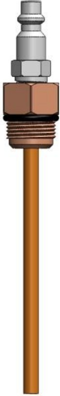
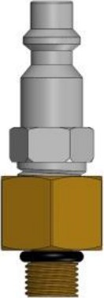

Doc no. MOC-TSB-13-07 // Vol. 13 No. 07 // Mar 19, 2013 // Transmission
Ford Transmission Adapters
New9478694787
MOC has developed a set of transmission adapters to be used on the Ford 5R55, 6R80 and 6R140 transmissions (Part No. 94786 and Part No. 94787).
What's new
The use of this new set of adapters allows a service to be performed without the use of the MOC Heat Exchanger Kit because the internal thermal valves are bypassed, thereby allowing a service to be completed in 20 minutes or less.
**One of the new 90 degree Intermediate Transmission Lines (Part No. 94855) will be needed to connect to the Dipstick plug adapter.
This adapter set can be used with all versions of the ATF machines:
Contact
For more information, contact the Machine & Equipment Department at 866.244.6621.


Known to fit
| Group | Vehicle |
|---|---|
| 2009 Ford transmissions | Expedition – 6R80 |
| 2009 Ford transmissions | Expedition EL – 6R80 |
| 2009 Ford transmissions | Explorer – 6R80 |
| 2009 Ford transmissions | Explorer Sports Trac – 6R80 |
| 2009 Ford transmissions | F-150 – 6R80 |
| 2011 Ford transmission | Ford cab & chassis – 6R140 |
| 2011 Ford transmission | Expedition – 6R80 |
| 2011 Ford transmission | Expedition EL – 6R80 |
| 2011 Ford transmission | Mustang – 6R80 |
| 2011 Ford transmission | F-150 – 6R80 |
| 2011 Ford transmission | F-250 super duty – 6R140 |
| 2011 Ford transmission | F-350 super duty – 6R140 |
| 2011 Ford transmission | F-450 super duty – 6R140 |
| 2013 Ford transmissions | Expedition – 6R80 |
| 2013 Ford transmissions | Mustang – 6R80 |
| 2010 Ford transmissions | Expedition – 6R80 |
| 2010 Ford transmissions | Expedition EL – 6R80 |
| 2010 Ford transmissions | Explorer – 6R80 |
| 2010 Ford transmissions | Explorer Sport Trac – 6R80 |
| 2010 Ford transmissions | F-150 – 6R80 |
| 2012 Ford transmission | Ford cab & chassis – 6R140 |
| 2012 Ford transmission | Expedition – 6R80 |
| 2012 Ford transmission | Expedition EL – 6R80 |
| 2012 Ford transmission | F-450 super duty – 6R140 |
| 2012 Ford transmission | Mustang – 6R80 |
| 2012 Ford transmission | F-150 – 6R80 |
| 2012 Ford transmission | F-250 – 6R140 |
| 2012 Ford transmission | F-350 – 6R140 |
| 2009 thru 2013 Lincoln | Navigator – 6R80 |
| 2009 thru 2013 Lincoln | Navigator L – 6R80 |
Part numbers
| Part No. | Description | Notes |
|---|---|---|
| 94500 | Standard MOC Transmission Machine with adapters | |
| 94830 | Standard MOC Transmission Machine without adapters | |
| 94780 | MOC ATF Machine w/onboard Dispensing with adapters | |
| 94790 | MOC ATF Machine w/onboard Dispensing without adapters | |
| 94800 | MOC Smart Tech™ Transmission Machine with adapters | |
| 95570 | MOC Smart Tech™ ATF Machine w/onboard Dispensing with Adapters | |
| 94786 | Adapter, ATF, F150 Dipstick Plug | |
| 94787 | Adapter, ATF, F150 Pressure Port | |
| 94855 | 90 degree Intermediate Transmission Lines |